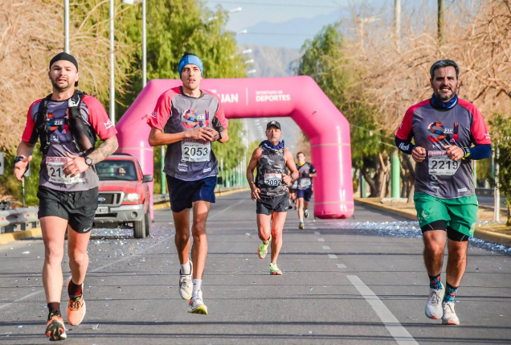
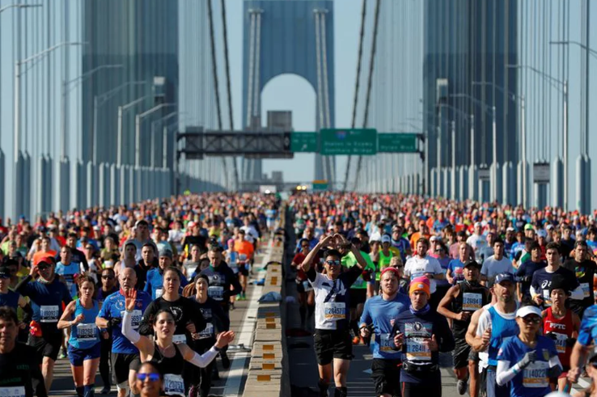

Bienvenidos a la 20º edición de El Cruce. Serán 100Km en 3 días, con 2 campamentos con costa de lago. El Cruce comenzará el día 1 de diciembre 2022.
Maratón Internacional de San Juan. El evento tiene distancias de 42, 21, 10 y 5 kilómetros, con más de 1600 participantes. El circuito mayor tendrá como parte de su recorrido los puntos más emblemáticos de la historia de la Provincia.
15K Buenos Aires 2022, la carrera que nadie se quiere perder y una de las más convocantes de Sudamérica. Con un llano y perfecto recorrido en Buenos Aires, ideal para mejorar tiempos para grandes desafíos.
La New York City Marathon se corre anualmente el primer domingo de noviembre y es todo un clásico del calendario maratoniano. La corren desde los mejores atletas profesionales del mundo, hasta corredores de todas las edades y habilidades, incluidos corredores con causa.
